Module 02 — Installation d’une distribution Debian¶
La transcription du support Drive et l’aide pédagogique sont séparées pour rendre leur provenance explicite.
SOURCE DRIVE · TRANSCRIPTION DU SUPPORT
Le contenu des documents du dossier TSSR est transcrit ci-dessous, page par page. Les textes et tableaux sont intégrés à la page Web. Aucun fichier PDF, aucune diapositive entière ni aucune reproduction de page n’est affiché. Seuls des croquis ou visuels isolés et vérifiés peuvent accompagner la transcription. Les versions et les consignes restent celles des supports de formation. Les compléments IA sont conservés dans leur onglet distinct.
Support · RES24_0050B - M02 - Linux Administration (Debian) · 25 pages transcrites
Noms de domaine de formation neutralisés explicitement ; paramètres numériques et procédures conservés.
Administration Debian
GNU/Linux
Module 02 – Installation d’une distribution Debian
Installation d’une distribution Debian
Objectifs
- Découvrir les différents modes d’installation possibles
- Apprendre à effectuer des installations de Debian GNU/Linux
Installer Debian Linux sur PC et sur serveurs
Installation d’une distribution Debian
Les modes d’installation
Depuis un CD-ROM ou DVD-ROM
L’installation à partir d’un CD ou DVD est historiquement la plus courante
- Live-CD Debian
- Un système directement fonctionnel depuis le DVD. Permet de tester sans apporter la moindre modification. Propose l’installation
- Plusieurs versions disponibles selon le bureau choisi
- DVD-ROM image complète
- Permet l’installation du système complet sans accès à internet ou à un dépôt local
- Ne contient pas les dernières mises à jour
Depuis un CD-ROM ou DVD-ROM
- CD-ROM Netinstall
- Contient le minimum pour lancer l’installation et récupérer les fichiers depuis un dépôt internet ou local
- Peut nécessiter une connexion à internet
- Permet la récupération des paquets à jour
Adresse de téléchargement des images ISO des DVD et CD-ROM https://www.debian.org/CD/http-ftp/#stable
Depuis une clé ou un disque USB
- De plus en plus, les lecteurs optiques laissent place aux périphériques USB
- En pratique, ce sont les mêmes images qu’aux étapes précédentes, mais le média CD ou DVD est remplacé par une clé
- De nombreux logiciels permettent de préparer des périphériques USB. On peut citer :
- Ventoy (Windows, Linux)
- Balena Etcher (Windows, Linux, macOS)
- Rufus (Windows)
- Unetbootin (Windows, Linux, macOS)
Écran de démarrage Ventoy https://www.ventoy.net/

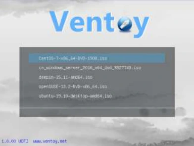
Depuis le réseau local
- La plupart des BIOS actuels permettent l'amorçage à partir du réseau grâce au boot PXE
- Au démarrage, la machine reçoit d’un serveur dédié une adresse IP et le nom du fichier d’installation à télécharger
Exemple de démarrage par PXE.
iPXE project http://ipxe.org

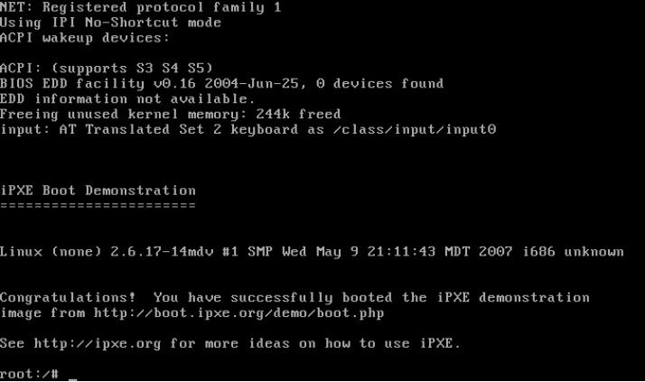
Et tout le reste
- Lorsqu'il s'agit de déployer un grand nombre de machines, plusieurs méthodes plus ou moins automatisées existent :
- FAI (Fully Automatic Installation) pour une installation sans intervention
- CD personnalisés avec pré-configuration
- Déploiements avec des outils de clonage, par exemple :
- FOG
- Symantec Ghost,
- Acronis True Image
- Clonezilla…
Installation d’une distribution Debian
Installer Debian
Partitionnement et Swap
- Un système Linux doit contenir au minimum deux partitions à l’installation :
- 1 Partition racine : /
- 1 Partition d’échange : SWAP
- La quantité d’espace disque recommandée pour la partition de SWAP varie suivant la quantité de RAM installée ou allouée :
- RAM < 1Go SWAP = RAM x 1.5
- RAM <= 2Go SWAP = RAM
- RAM > 2Go SWAP = 2Go ou + selon le besoin
Étapes d’installation de Debian
- Au démarrage du média d’installation, le choix est donné entre une installation graphique ou installation simple qui utilisera un mode texte amélioré dit « semi-graphique »
- Ce choix ne désigne pas le mode cible de l’installation de Debian
- On peut installer un serveur Linux en passant par l’installation graphique comme un PC de bureau avec interface graphique via l’installeur texte
- Mode de l’installeur ≠Mode de fonctionnement du Linux installé

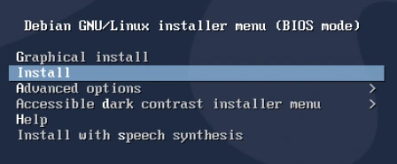
Étapes d’installation de Debian
Choix de la langue
- Nous utiliserons dans ce cours des systèmes en français
- Toutefois, il est courant en production de posséder des systèmes installés en anglais avec un clavier français

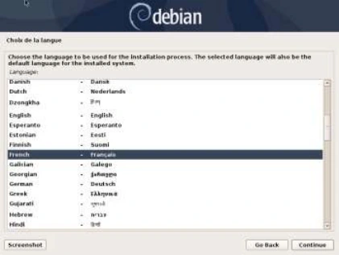
Étapes d’installation de Debian
Nom de machine Ici l’on donne le nom d’hôte du système.
Domaine Ici l’on spécifie le domaine DNS auquel appartient la machine. Peut être laissé vide.

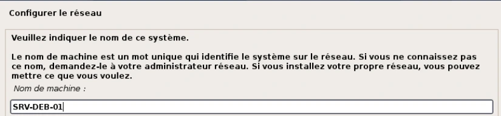
Transcription de la capture : noms du réseau de formation neutralisés, paramètres numériques et suite conservés.
Configurer le réseau — Domaine : laboratoire.example (nom du domaine de formation neutralisé)Étapes d’installation de Debian
Mot de passe du superutilisateur root L’installeur demande la saisie du mot de passe qui sera affecté à root.

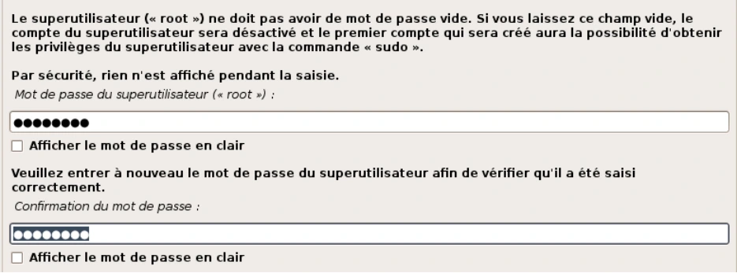
Étapes d’installation de Debian
École du « su »
- Le simple fait d’affecter un mot de passe à l’utilisateur root réserve les pouvoirs d’administration du système qu’à lui et lui seul
- Le premier utilisateur créé ne possédera quant à lui que des privilèges limités
user30@deb:~$ su -
Mot de passe :
root@deb:~#Étapes d’installation de Debian
École du « sudo » Si durant cette phase d’installation, aucun mot de passe n’est configuré pour root, alors le premier utilisateur aura la possibilité d’effectuer une élévation de privilège via son propre mot de passe avec la commande sudo.
user30@deb:~$ sudo -i
[sudo] Mot de passe de user30 :
root@deb:~#Étapes d’installation de Debian
Il est fortement déconseillé de créer un seul utilisateur avec le privilège sudo. Il est possible après installation d’affecter un mot de passe au compte root via la commande :
user30@deb:~$ sudo passwd root
[sudo] Mot de passe de user30 :
root@deb:~# passwd
Nouveau mot de passe :
Retapez le nouveau mot de passe :
passwd : le mot de passe a été mis à jour avec succèsÉtapes d’installation de Debian
Partitionner les disques
- Cette phase d’installation permet de choisir comment subdiviser son disque pour créer les différents points de montage du système
- On peut choisir le mode assisté ou le mode manuel plus complet
N.B. : En choisissant la technologie LVM, il faut au préalable configurer un partitionnement Intel MBR (BIOS) ou GPT (UEFI).

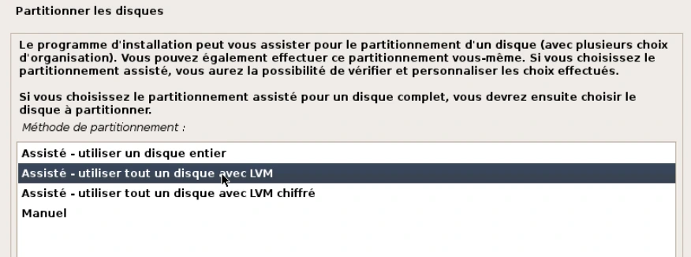
Étapes d’installation de Debian
Sélection des logiciels
- En cas d’installation Netinstall, on pourra ici choisir le dépôt voulu (ici ftp.fr.debian.org)
- Il est aussi possible de préciser un éventuel serveur miroir

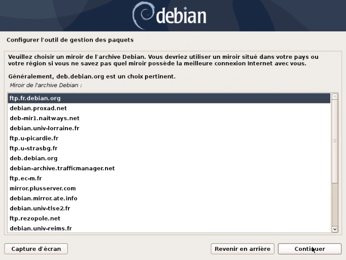
Étapes d’installation de Debian
Sélection des logiciels Il est aussi possible ici de préciser une adresse de serveur proxy (serveur mandataire en français).

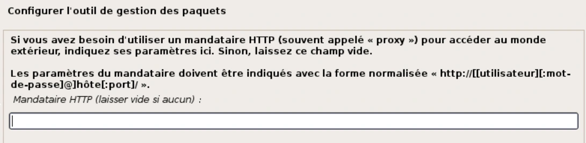
Étapes d’installation de Debian
Sélection des logiciels
- Ici on peut choisir les packs logiciels à installer
- Premier exemple : un environnement de bureau classique (gnome) Debian
- Et second exemple : un environnement non graphique pour un serveur

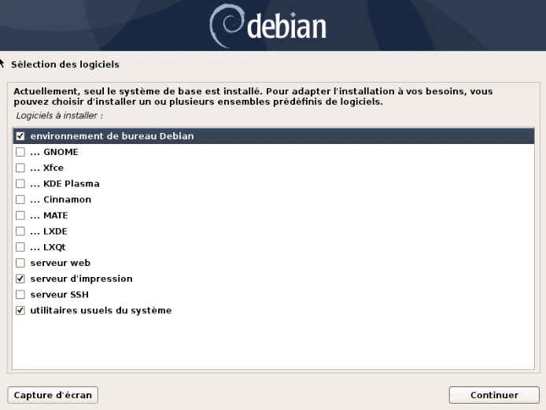
Étapes d’installation de Debian
Sélection des logiciels Dernière étape, valider l’installation du programme de démarrage

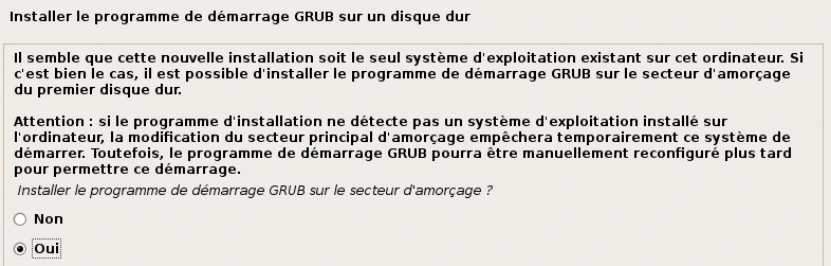

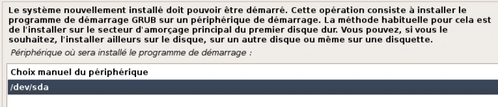
Installation d’une distribution Debian
Démo
Installation Debian sur VMware Workstation
Installation d’une distribution Debian
TP Installation d’un système Debian graphique
Démo
Installation d’un système Debian serveur
Conclusion
- Vous savez nommer les divers modes d’installation d’un système Linux
- Vous savez installer une machine client Debian
- Vous savez installer un serveur Debian
Référence du document : 1TNT50blqza62bKw7tbrBUGIz_KIP5gnq · SHA-256 0fe2d7803fbfc989…
Énoncé · M02TP01 - Enoncé - Installation de Debian AVEC interface graphique · 2 pages transcrites
Doublon conservé : ce document est identique au document 1IzfXXbFqXsHYz8iNsdGV27CwJ3-92bg8 (même empreinte). Les deux emplacements du Drive sont maintenus.
Installation de Debian 11 AVEC interface graphique
TP du Module 02 – Installation d’une distribution Debian
Avant de démarrer ce TP, il convient d’avoir suivi les vidéos des modules 1 et 2
Une solution de virtualisation doit être installée sur votre machine
Durée estimée
30 à 45 minutes
Correction
I. Récupérer l’image source d’installation
Copier localement le fichier debian-11.x.x-adm64-netinst.iso depuis le serveur de l’[organisme de formation]. (avec 11.x.x = la version disponible sur le serveur)
II. Création de la machine virtuelle
Créer une nouvelle machine virtuelle avec les paramètres suivant :
- Interface réseau permettant l'accès au réseau internet (Bridged)
- Disque dur de 40 Go de taille dynamique
- 4096 Mo de mémoire vive
- Démarrer la machine virtuelle en mappant le fichier ISO comme CDROM.
III. Installation de Debian
1) Choisir les options suivantes :
- Installer Debian en mode graphique
- Choix de la langue : French - Français
- Emplacement géographique : France
- Clavier : France
- Nom de la machine : définir un nom
- Nom de domaine : laboratoire.example
- Utilisateurs :
- Indiquer un mot de passe pour le compte root
- Créer un utilisateur à votre nom
2) Partitionnement des disques :
- Méthode de partitionnement : choisir Manuel
- Sélectionner le disque détecté puis « continuer »
- Configurer le gestionnaire de volume logique LVM
- Créer un groupe de volumes puis les volumes logiques indiqués ci-dessous :
| Type | Taille | Système de fichiers | Point de montage |
|---|---|---|---|
| LVM | 2048 MB | SWAP | |
| LVM | 20 GB | ext4 | / |
| LVM | 5 GB | FAT32 | /windows |
| LVM | L’espace restant | ext4 | /home |
3) Configurer l'outil de gestion des paquets :
- Analyser un autre CD ou DVD : Non
- Pays du miroir de l’archive Debian : France
- Miroir de l’archive Debian : ftp.fr.debian.org
- Ne pas utiliser de mandataire (proxy)
- Popularity contest : Non
4) Choisir et installer des logiciels :
- Logiciels à installer : sélectionner
- environnement de bureau Debian
- utilitaires usuels du système
5) Installer le programme de démarrage GRUB :
- Installer le programme : Oui
- Périphérique où sera installé le programme : /dev/sda
Terminer l'installation
Redémarrer
Solution
Une solution est proposée pour ce TP sous la forme d'un PDF commenté, disponible dans les ressources à télécharger.
Référence du document : 11EQ5DumzryAnshIXxkFG1UD5rb2c-IgP · SHA-256 39d303359a5f97f7…
Énoncé · M02TP01 - Enoncé - Installation de Debian AVEC interface graphique · 2 pages transcrites
Doublon conservé : ce document est identique au document 11EQ5DumzryAnshIXxkFG1UD5rb2c-IgP (même empreinte). Les deux emplacements du Drive sont maintenus.
Installation de Debian 11 AVEC interface graphique
TP du Module 02 – Installation d’une distribution Debian
Avant de démarrer ce TP, il convient d’avoir suivi les vidéos des modules 1 et 2
Une solution de virtualisation doit être installée sur votre machine
Durée estimée
30 à 45 minutes
Correction
I. Récupérer l’image source d’installation
Copier localement le fichier debian-11.x.x-adm64-netinst.iso depuis le serveur de l’[organisme de formation]. (avec 11.x.x = la version disponible sur le serveur)
II. Création de la machine virtuelle
Créer une nouvelle machine virtuelle avec les paramètres suivant :
- Interface réseau permettant l'accès au réseau internet (Bridged)
- Disque dur de 40 Go de taille dynamique
- 4096 Mo de mémoire vive
- Démarrer la machine virtuelle en mappant le fichier ISO comme CDROM.
III. Installation de Debian
1) Choisir les options suivantes :
- Installer Debian en mode graphique
- Choix de la langue : French - Français
- Emplacement géographique : France
- Clavier : France
- Nom de la machine : définir un nom
- Nom de domaine : laboratoire.example
- Utilisateurs :
- Indiquer un mot de passe pour le compte root
- Créer un utilisateur à votre nom
2) Partitionnement des disques :
- Méthode de partitionnement : choisir Manuel
- Sélectionner le disque détecté puis « continuer »
- Configurer le gestionnaire de volume logique LVM
- Créer un groupe de volumes puis les volumes logiques indiqués ci-dessous :
| Type | Taille | Système de fichiers | Point de montage |
|---|---|---|---|
| LVM | 2048 MB | SWAP | |
| LVM | 20 GB | ext4 | / |
| LVM | 5 GB | FAT32 | /windows |
| LVM | L’espace restant | ext4 | /home |
3) Configurer l'outil de gestion des paquets :
- Analyser un autre CD ou DVD : Non
- Pays du miroir de l’archive Debian : France
- Miroir de l’archive Debian : ftp.fr.debian.org
- Ne pas utiliser de mandataire (proxy)
- Popularity contest : Non
4) Choisir et installer des logiciels :
- Logiciels à installer : sélectionner
- environnement de bureau Debian
- utilitaires usuels du système
5) Installer le programme de démarrage GRUB :
- Installer le programme : Oui
- Périphérique où sera installé le programme : /dev/sda
Terminer l'installation
Redémarrer
Solution
Une solution est proposée pour ce TP sous la forme d'un PDF commenté, disponible dans les ressources à télécharger.
Référence du document : 1IzfXXbFqXsHYz8iNsdGV27CwJ3-92bg8 · SHA-256 39d303359a5f97f7…
Énoncé · M02TP02 - Enoncé - Installation de Debian SANS interface graphique · 2 pages transcrites
Doublon conservé : ce document est identique au document 1dbc-S71EnOhWxKfkGTxp6nWU8ygyan2P (même empreinte). Les deux emplacements du Drive sont maintenus.
Installation de Debian 11 SANS interface graphique
TP du Module 02 – Installation d’une distribution Linux
Avant de démarrer ce TP, il convient d’avoir suivi les vidéos des modules 1 et 2
Une solution de virtualisation doit être installée sur votre machine
Ce TP et les suivants seront à faire sur la machine mise à votre disposition par l’[organisme de formation].
Durée estimée
45mn à 1 heure
Énoncé
I. Récupérer l’image source d’installation
Copier localement le fichier debian-11.x.x-amd64-dvd.iso depuis le serveur de l’[organisme de formation]. (avec 11.x.x = la version disponible sur le serveur)
II. Création de la machine virtuelle
Créer une nouvelle machine virtuelle avec les paramètres suivant :
- Interface réseau permettant l'accès au réseau de la salle (Bridged)
- Disque dur de 10 Go de taille dynamique
- 2048 Mo de mémoire vive
- Démarrer la machine virtuelle en mappant le fichier ISO comme CDROM.
III. Installation de Debian
1) Choisir les options suivantes :
- Installer Debian en mode graphique (mode par défaut)
- Choix de la langue : French - Français
- Emplacement géographique : France
- Disposition du clavier : Français
- Nom de la machine : définir un nom
- Nom de domaine : laboratoire.example
- Utilisateurs :
- Indiquer un mot de passe pour le compte root
- Créer un utilisateur
2) Partitionner les disques :
- Méthode de partitionnement : Assisté - utiliser tout un disque avec LVM
- Disque à partitionner : sélectionner le disque SCSI
- Schéma de partitionnement : Partitions /home, /var et /tmp séparées
3) Configurer l'outil de gestion des paquets :
- Analyser un autre CD ou DVD : Non
- PAS D’UTILISATION DES MIROIRS
- Popularity contest : Non
4) Choisir et installer des logiciels :
- Logiciels à installer : sélectionner
- serveur SSH
- utilitaires usuels du système
5) Installer le programme de démarrage GRUB :
- Installer le programme : Oui
- Périphérique où sera installé le programme : /dev/sda
Terminer l'installation
Redémarrer
Solution
Une solution est proposée pour ce TP sous la forme d'un PDF commenté, disponible dans les ressources à télécharger.
Référence du document : 1la5XXtYUGY8KlSyaM99C7H_t0KbBsvCO · SHA-256 01b8f7b1b64e2f62…
Énoncé · M02TP02 - Enoncé - Installation de Debian SANS interface graphique · 2 pages transcrites
Doublon conservé : ce document est identique au document 1la5XXtYUGY8KlSyaM99C7H_t0KbBsvCO (même empreinte). Les deux emplacements du Drive sont maintenus.
Installation de Debian 11 SANS interface graphique
TP du Module 02 – Installation d’une distribution Linux
Avant de démarrer ce TP, il convient d’avoir suivi les vidéos des modules 1 et 2
Une solution de virtualisation doit être installée sur votre machine
Ce TP et les suivants seront à faire sur la machine mise à votre disposition par l’[organisme de formation].
Durée estimée
45mn à 1 heure
Énoncé
I. Récupérer l’image source d’installation
Copier localement le fichier debian-11.x.x-amd64-dvd.iso depuis le serveur de l’[organisme de formation]. (avec 11.x.x = la version disponible sur le serveur)
II. Création de la machine virtuelle
Créer une nouvelle machine virtuelle avec les paramètres suivant :
- Interface réseau permettant l'accès au réseau de la salle (Bridged)
- Disque dur de 10 Go de taille dynamique
- 2048 Mo de mémoire vive
- Démarrer la machine virtuelle en mappant le fichier ISO comme CDROM.
III. Installation de Debian
1) Choisir les options suivantes :
- Installer Debian en mode graphique (mode par défaut)
- Choix de la langue : French - Français
- Emplacement géographique : France
- Disposition du clavier : Français
- Nom de la machine : définir un nom
- Nom de domaine : laboratoire.example
- Utilisateurs :
- Indiquer un mot de passe pour le compte root
- Créer un utilisateur
2) Partitionner les disques :
- Méthode de partitionnement : Assisté - utiliser tout un disque avec LVM
- Disque à partitionner : sélectionner le disque SCSI
- Schéma de partitionnement : Partitions /home, /var et /tmp séparées
3) Configurer l'outil de gestion des paquets :
- Analyser un autre CD ou DVD : Non
- PAS D’UTILISATION DES MIROIRS
- Popularity contest : Non
4) Choisir et installer des logiciels :
- Logiciels à installer : sélectionner
- serveur SSH
- utilitaires usuels du système
5) Installer le programme de démarrage GRUB :
- Installer le programme : Oui
- Périphérique où sera installé le programme : /dev/sda
Terminer l'installation
Redémarrer
Solution
Une solution est proposée pour ce TP sous la forme d'un PDF commenté, disponible dans les ressources à télécharger.
Référence du document : 1dbc-S71EnOhWxKfkGTxp6nWU8ygyan2P · SHA-256 01b8f7b1b64e2f62…
Correction · M02TP01 - Solution - Installation de Debian AVEC interface graphique · 8 pages transcrites
Les noms de domaine de formation sont neutralisés explicitement. Certaines captures sont transcrites en tableaux ; les paramètres numériques et les procédures sont conservés.
Correction originale : à consulter après avoir tenté l’exercice.
Installation de Debian 11 AVEC interface graphique
TP du Module 02 – Installation d’une distribution Debian
Avant de démarrer ce TP, il convient d’avoir suivi les vidéos des modules 1 et 2
Une solution de virtualisation doit être installée sur votre machine
Durée estimée
30 à 45 minutes
Correction
I. Récupérer l’image source d’installation
Copier localement le fichier debian-11.x.x-adm64-netinst.iso depuis le serveur de l’[organisme de formation]. (avec 11.x.x = la version disponible sur le serveur)
II. Création de la machine virtuelle
Créer une nouvelle machine virtuelle avec les paramètres suivant :
Installer le système plus tard
- Interface réseau permettant l'accès au réseau internet (Bridged)
- Disque dur de 40 Go de taille dynamique

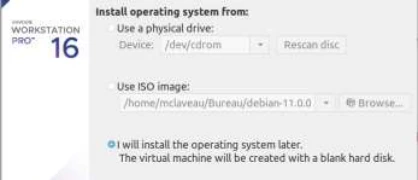
- 4096 Mo de mémoire vive
HDD 40 + 4096M de RAM + interface réseau bridge
- Démarrer la machine virtuelle en mappant le fichier ISO comme CDROM.
Sélectionner l'iso d'installation Debian
III. Installation de Debian
1) Choisir les options suivantes :
- Installer Debian en mode graphique
- Choix de la langue : French - Français
- Emplacement géographique : France
- Clavier : France
- Nom de la machine : définir un nom
- Nom de domaine : laboratoire.example
- Utilisateurs :
- Indiquer un mot de passe pour le compte root
- Créer un utilisateur à votre noml
Installation en mode graphique

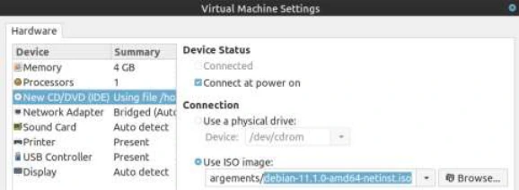

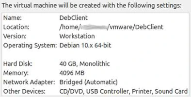

Nommer la machine
Préciser le nom de domaine
Saisie du mot de passe root
Saisie du nom complet du nouvel utilisateur
Saisie du login
Puis le mot de passe de l'utilisateur
Transcription textuelle de la capture : les noms de domaine de formation sont neutralisés ; adresses IP, commandes et résultats sont conservés.
| Écran de l’installeur | Valeur |
|---|---|
| Configurer le réseau — Domaine | laboratoire.example (nom de domaine de formation neutralisé) |

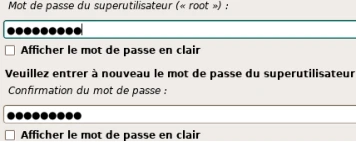

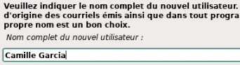


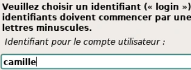

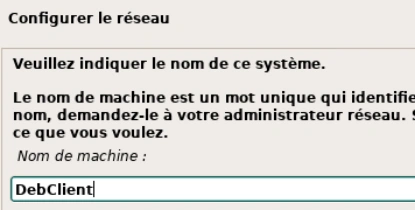
2) Partitionnement des disques :
- Méthode de partitionnement : choisir Manuel
- Sélectionner le disque détecté puis « continuer »
- Configurer le gestionnaire de volume logique LVM
- Créer un groupe de volumes puis les volumes logiques indiqués ci-dessous :
| Type | Taille | Système de fichiers | Point de montage |
|---|---|---|---|
| LVM | 2048 MB | SWAP | |
| LVM | 20 GB | ext4 | / |
| LVM | 5 GB | FAT32 | /windows |
| LVM | L’espace restant | ext4 | /home |

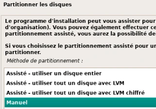

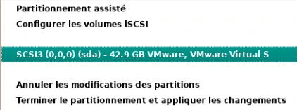

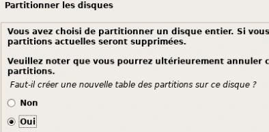
Se rendre dans le gestionnaire LVM
Valider les modifications
Commencer par créer un Groupe de Volumes
Donner un nom explicite au Groupe de Volumes
Sélectionner le disque à utiliser
Créer ensuite un volume logique

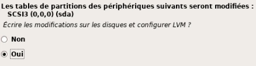

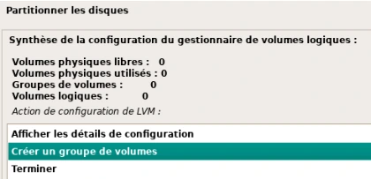

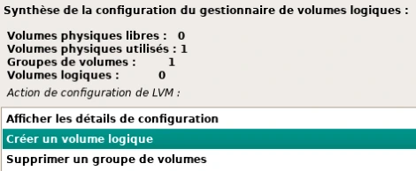

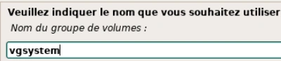

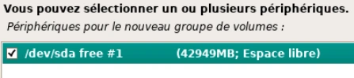

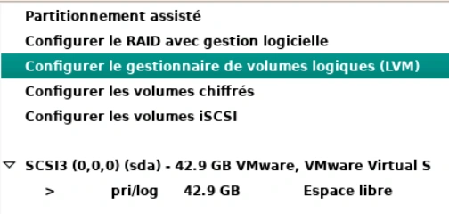
→ Saisir nom et taille du volume
Répéter les étapes de creation des volumes en respectant les tailles demandées. Terminer par la partition home de manière à lui affecter l’espace restant.
"Afficher les détails de configuration” pour vérifier.
Terminer la mise en place des Volumes Définir les points de montage et systèmes de fichiers.
Sélectionner le volume lvroot

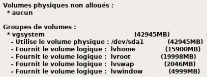

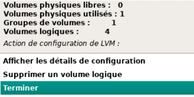

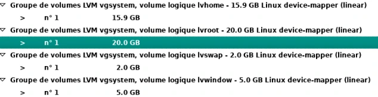

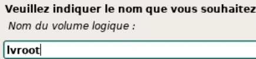

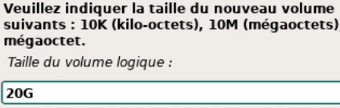
Sélectionner "Utiliser comme"
Choisir le type ext4
→ Définir le point de montage comme “/système de fichiers racine”
Terminer le paramètrage de ce volume
Répéter ces étapes pour les autres volumes logiques en respectant les indications . NB : la partition Swap n’a pas de point de montage.
Terminer la définition des partitions et volumes
Appliquer les modifications après avoir vérifier les informations

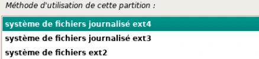

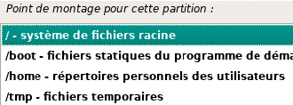

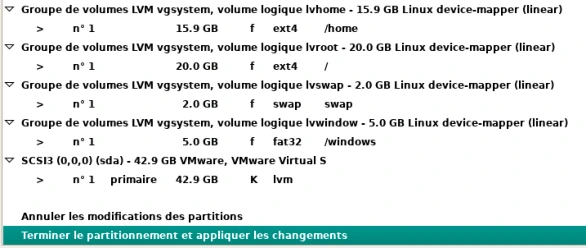

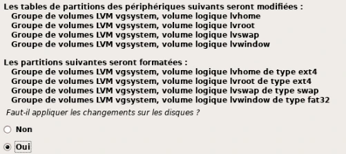

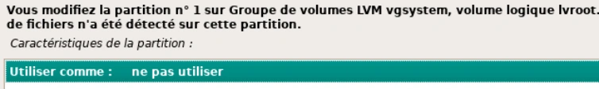

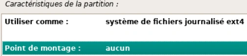

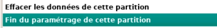
3) Configurer l'outil de gestion des paquets :
- Analyser un autre CD ou DVD : Non
- Pays du miroir de l’archive Debian : France
- Miroir de l’archive Debian : ftp.fr.debian.org
- Ne pas utiliser de mandataire (proxy)
- Popularity contest : Non
→ Attention à bien choisir le dépot ftp.fr.debian.org
4) Choisir et installer des logiciels :
- Logiciels à installer : sélectionner
- environnement de bureau Debian
- utilitaires usuels du système
La sélection des tâches logicielles à installer
5) Installer le programme de démarrage GRUB :
- Installer le programme : Oui
- Périphérique où sera installé le programme : /dev/sda
→ Terminer l'installation Redémarrer

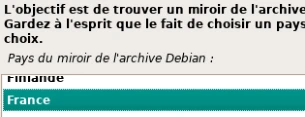

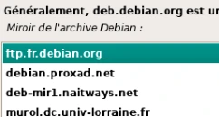

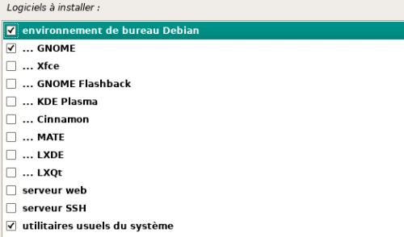

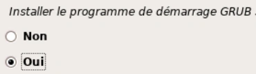

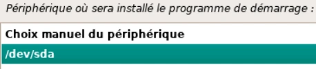
Référence du document : 1AfZ3HoKGgwtvLN9yZ4N49jQfsXb5lGZd · SHA-256 84deb13b4f31ad60…
Correction · M02TP02 - Solution - Installation de Debian SANS interface graphique · 6 pages transcrites
Noms de domaine de formation neutralisés explicitement ; paramètres numériques et procédures conservés.
Correction originale : à consulter après avoir tenté l’exercice.
Installation de Debian 11 SANS interface graphique
TP du Module 02 – Installation d’une distribution Linux
Avant de démarrer ce TP, il convient d’avoir suivi les vidéos des modules 1 et 2
Une solution de virtualisation doit être installée sur votre machine
Durée estimée
45mn à 1 heure
Correction
I. Récupérer l’image source d’installation
Copier localement le fichier debian-11.x.x-amd64-dvd.iso depuis le serveur de l’[organisme de formation]. (avec 11.x.x = la version disponible sur le serveur)
II. Création de la machine virtuelle
Créer une nouvelle machine virtuelle avec les paramètres suivant :
- Interface réseau permettant l'accès au réseau de la salle (Bridged)
- Disque dur de 10 Go de taille dynamique
- 2048 Mo de mémoire vive
Les paramètres de la VM
- Démarrer la machine virtuelle en mappant le fichier ISO comme CDROM.

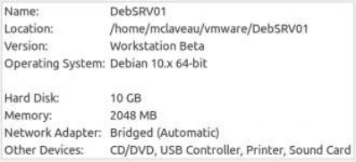
Choisir l'image d'installation DVD
III. Installation de Debian
1) Choisir les options suivantes :
- Installer Debian en mode graphique (mode par défaut)
- Choix de la langue : French - Français
- Emplacement géographique : France
- Disposition du clavier : Français
- Nom de la machine : définir un nom
- Nom de domaine : laboratoire.example
- Utilisateurs :
- Indiquer un mot de passe pour le compte root
- Créer un utilisateur
Installation en mode graphique
Nommer la machine

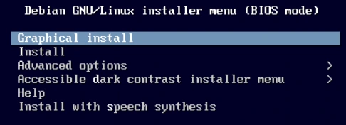

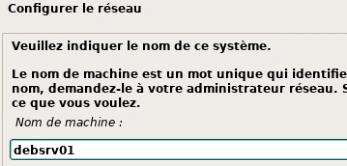

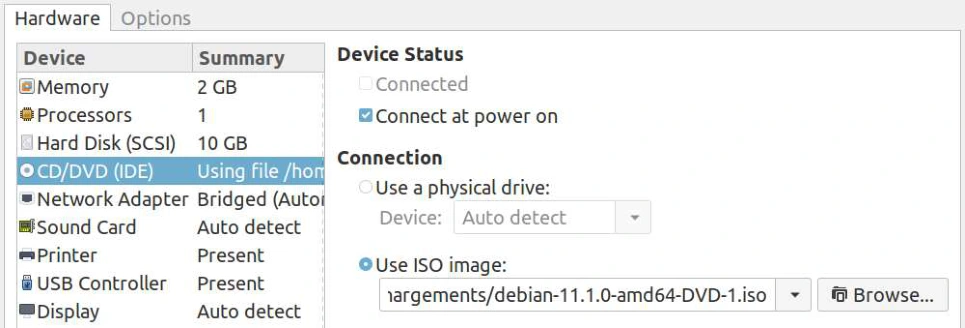
Préciser le nom de domaine
Saisie du mot de passe root
Saisie du nom complet du nouvel utilisateur
Saisie du login
Puis le mot de passe de l'utilisateur

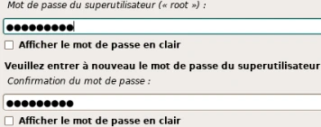


Transcription de la capture avec neutralisation explicite des noms de domaine de formation.
Configurer le réseau — Domaine : laboratoire.example (domaine de formation neutralisé)2) Partitionner les disques :
- Méthode de partitionnement : Assisté - utiliser tout un disque avec LVM
- Disque à partitionner : sélectionner le disque SCSI
- Schéma de partitionnement : Partitions /home, /var et /tmp séparées


Accepter la configuration automatique
3) Configurer l'outil de gestion des paquets :
- Analyser un autre CD ou DVD : Non
- PAS D’UTILISATION DES MIROIRS
- Popularity contest : Non
Répondre non à ces trois questions
4) Choisir et installer des logiciels :
- Logiciels à installer : sélectionner
- serveur SSH
- utilitaires usuels du système
Sélection des deux seuls groupes demandés


5) Installer le programme de démarrage GRUB :
- Installer le programme : Oui
- Périphérique où sera installé le programme : /dev/sda
Terminer l'installation Redémarrer


Référence du document : 1uiQOk1ycmba-mL9IRr-hmErYoKgLB68C · SHA-256 8448afd9585de604…
Complément IA / externe au cours — fiche pédagogique du portail
Cette fiche contient une reformulation et des aides d’apprentissage rédigées par IA. Elle est distincte de la transcription des documents du Drive et ne la remplace pas. Les schémas de synthèse de cette fiche sont des illustrations IA / externes au cours, sauf les captures explicitement attribuées à un document source.
Cours optimisé — reformulation pédagogique du support et des TP associés. Les exemples du parcours conservent leur contexte Debian 11 ; les corrections et actualisations sont identifiées comme compléments externes. Les transcriptions intégrales se consultent dans l’onglet Original.
Objectifs¶
- Préparer les deux VM et choisir le média adapté à chacune.
- Comparer les deux choix LVM, les tâches installées et la méthode d’amorçage.
- Vérifier au premier démarrage les comptes, les montages, le bureau ou l’accès SSH.
Choisir une méthode d’installation¶
Le support distingue le média qui lance l’installeur, la provenance des paquets et le système que l’on souhaite obtenir. Une interface graphique d’installation peut parfaitement produire un serveur sans bureau.
| Méthode du support | Principe | Point à vérifier |
|---|---|---|
| Live | Tester un environnement avant installation | Le test ne remplace pas l’installation sur disque |
| DVD complet | Beaucoup de paquets disponibles hors ligne | Mises à jour postérieures au média |
| Netinstall | Petit média puis récupération sur un dépôt | Accès réseau et miroir accessibles |
| USB | Porter une image d’installation sur une clé | Méthode d’écriture adaptée à l’image |
| PXE / réseau | Obtenir une configuration réseau puis un chargeur | Services réseau et fichier d’amorçage |
| Installation automatisée | FAI ou préconfiguration | Réponses, cible et reproductibilité |
| Clonage | Déployer une image préparée avec FOG, Ghost, Acronis ou Clonezilla | État et identité des systèmes clonés |
Ventoy, Etcher, Rufus et Unetbootin sont les exemples d’outils USB cités, pas des étapes obligatoires. Pour un grand parc, une installation automatisée reconstruit un système à partir de paramètres, tandis que le clonage réutilise une image préparée.
Préparer les deux machines du TP¶
| Paramètre source | Machine avec bureau | Serveur sans bureau |
|---|---|---|
| Version du scénario | Debian 11 | Debian 11 |
| Média | Netinstall | DVD |
| Disque dynamique | 40 Go | 10 Go |
| Mémoire | 4 096 Mo | 2 048 Mo |
| Réseau | Bridged donnant accès à Internet | Bridged donnant accès au réseau du laboratoire |
| Logiciels | Bureau Debian et utilitaires usuels | Serveur SSH et utilitaires usuels |
Le pont réseau du scénario suppose un environnement de formation adapté. Le nom de domaine de formation est affiché avec un repère neutralisé dans les transcriptions. Le nom d’hôte, les comptes et la connectivité se choisissent avant la copie des paquets.
Parcours de l’installeur¶
- Démarrer sur le média connecté à la VM, puis choisir l’installeur graphique ou texte.
- Choisir français, France et clavier français pour reproduire le TP. Une installation en anglais avec clavier français reste un choix distinct.
- Définir le nom d’hôte et, si nécessaire, le domaine DNS. Un domaine DNS n’inscrit pas automatiquement le poste dans un annuaire.
- Choisir la politique des comptes : mot de passe root puis utilisateur ordinaire dans les TP fournis.
- Définir le partitionnement et les points de montage. Vérifier le disque sélectionné avant validation.
- Configurer le miroir et un proxy uniquement s’il existe. Le TP serveur demande de ne pas utiliser de miroir à cette étape.
- Sélectionner les tâches logicielles, puis installer le chargeur de démarrage correspondant au mode d’amorçage.
- Redémarrer sur le disque installé et contrôler comptes, réseau et stockage.
Root, su et sudo¶
Dans le parcours Debian de la source, donner un mot de passe à root ne donne pas automatiquement les droits sudo au premier utilisateur. Laisser ce mot de passe vide dans l’installeur conduit à un parcours différent, avec administration via le premier utilisateur et sudo. Ce sont des paramètres d’installation, pas une propriété immuable des comptes.
su - ouvre un environnement de connexion de l’identité cible, root par défaut. sudo -i dépend des autorisations sudo et demande généralement le mot de passe de l’utilisateur qui l’invoque. Le support montre aussi sudo passwd root pour attribuer ensuite un mot de passe à root ; cette modification doit correspondre à la politique choisie.
Partitionnement du scénario¶
Sur la machine graphique, le TP impose un partitionnement manuel avec LVM : swap de 2 048 MB, racine ext4 de 20 GB, FAT32 de 5 GB montée sur /windows, et reste en ext4 pour /home. Sur le serveur, le mode assisté utilise tout le disque avec LVM et sépare /home, /var et /tmp. Les noms de VG/LV visibles dans une correction ne remplacent pas les noms réellement créés sur votre VM.
Le support propose une règle historique pour le swap : 1,5 fois la RAM sous 1 Go, même taille jusqu’à 2 Go, puis 2 Go ou davantage selon le besoin. Cette règle décrit le support ; elle ne dimensionne pas automatiquement une machine moderne.
Clarification externe — racine, swap et amorçage
Une partition swap séparée n’est pas une obligation universelle : le besoin et le dimensionnement dépendent notamment de la charge et de l’hibernation. La disposition du disque dépend aussi du firmware ; un système UEFI nécessite une disposition adaptée avec partition système EFI. Ne recopiez pas aveuglément l’étape BIOS /dev/sda sur une installation UEFI. Référence : guide d’installation Debian, partitionnement.
TP 01 — Installer le poste avec interface graphique¶
- Créer une VM avec 4 096 Mo de mémoire, un disque dynamique de 40 Go et une interface en pont sur le réseau du laboratoire. Brancher l’ISO Debian 11
netinsten lecteur de CD virtuel. Vérifier le nom du fichieramd64avant de démarrer. - Dans l’installeur graphique, choisir le français, la France et le clavier français. Saisir le nom d’hôte, le domaine du laboratoire, le mot de passe root et les informations du compte ordinaire.
- Choisir le partitionnement manuel. Créer le groupe LVM et ses volumes dans l’ordre du tableau précédent. Réserver le reste à
/home. Contrôler la racine, le système de fichiers de chaque volume et le swap avant d’écrire les changements. La partition d’amorçage éventuelle dépend du mode de démarrage de la VM. - Refuser le scan d’un autre média, choisir le miroir Debian de France indiqué dans le TP et laisser le champ proxy vide. Refuser l’enquête de popularité. Sélectionner les tâches demandées pour le poste, dont l’environnement de bureau, et noter celles réellement installées.
- Installer GRUB sur le disque de la VM suivant le mode d’amorçage. Éjecter l’ISO, redémarrer et ouvrir une session avec le compte ordinaire. Montrer que le bureau démarre et que les volumes attendus sont montés.
TP 02 — Installer le serveur sans environnement de bureau¶
- Créer une VM avec 2 048 Mo de mémoire, un disque dynamique de 10 Go et une interface en pont sur le réseau de la salle. Utiliser l’ISO DVD Debian 11 du TP. Les paquets du DVD permettent de poursuivre sans miroir.
- Utiliser l’installeur graphique si souhaité. Reprendre le choix de la langue, du clavier et des comptes. Le mode de l’installeur ne détermine pas la présence d’un bureau sur le système final.
- Choisir Assisté — utiliser tout un disque avec LVM sur le disque virtuel SCSI. Sélectionner le schéma avec
/home,/varet/tmpséparés. Examiner le récapitulatif avant de confirmer. - Refuser le scan d’un autre média, l’utilisation d’un miroir et l’enquête de popularité. Cocher serveur SSH et utilitaires usuels du système. Laisser les tâches d’environnement de bureau décochées.
- Confirmer l’installation de GRUB. Le TP illustre
/dev/sdadans sa VM. Identifier le disque et le mode d’amorçage de la VM utilisée avant de valider. Éjecter l’ISO, redémarrer, ouvrir la session et vérifier le service SSH.
cat /etc/os-release
hostnamectl
id
ip -br address
lsblk -f
findmnt
swapon --show
systemctl status ssh --no-pager
Sur le poste, vérifier les quatre affectations du tableau LVM. Sur le serveur, relever les montages séparés et tester SSH depuis un poste autorisé du laboratoire. Un service actif dans la VM et une connexion réussie depuis le client établissent deux contrôles différents.
Contrôles et erreurs fréquentes¶
Après installation, vérifier la présence des montages demandés, ouvrir une session ordinaire et tester le mécanisme d’élévation choisi. Si le serveur affiche un bureau, revoir la sélection des logiciels ; si l’installeur était graphique, cela ne prouve rien sur le système installé. Une absence de paquets récents sur un DVD s’explique par la date du média ; une netinstall dépend du dépôt effectivement utilisé.
Schéma explicatif — complément pédagogique¶
Illustration IA / externe au cours — schéma pédagogique de synthèse.
À retenir¶
Le poste utilise un partitionnement LVM manuel et un bureau. Le serveur utilise le LVM assisté et installe SSH et les utilitaires sans bureau. Le contrôle se fait après le démarrage depuis le disque installé.
Autoévaluation¶
- L’installeur graphique oblige-t-il à installer GNOME ?
- Quel volume reçoit le reste du disque du TP graphique ?
- Pourquoi relever BIOS/UEFI avant de choisir la disposition du disque ?
- Pourquoi choisir le DVD pour le serveur si l’énoncé exclut un miroir ?
- Quel résultat démontre que le service SSH fonctionne depuis le poste client ?
Réponses commentées
- Non ; le bureau est choisi dans les tâches logicielles.
- Le volume destiné à
/home. - Les exigences d’amorçage et le placement du chargeur diffèrent.
- Le média fournit les paquets du scénario sans dépendre d’un miroir lors de l’installation.
- Une connexion aboutie vers la bonne VM avec le compte prévu. Vérifier aussi l’état de
ssh.servicecôté serveur.
Pour travailler ce module¶
M02 — Installation d’une distribution Debian
20 questions
Teste tes connaissances sur ce module.